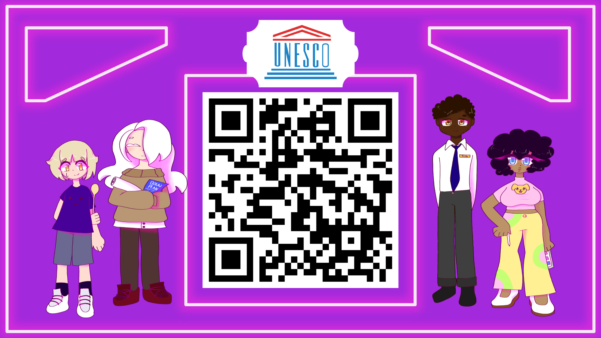

Hallo en welkom op mijn portfolio! Tijdens mijn studie kreeg ik de kans om stage te lopen en deel te nemen aan boeiende projecten. Ik ben trots op mijn groei en ben benieuwd naar de volgende stappen in mijn ontwikkeling. Veel plezier met het ontdekken van mijn portfolio.
In mijn vrije tijd vind ik het leuk om creatief te zijn, dus doe ik graag tekenen en lezen.
Ik lees van alles, als het maar interessant genoeg is. Verder hou ik er ook van om films en series te
bekijken soms op Netflix en anders ergens anders.
Mijn favoriete film is 'Black swan', het is
een
interessante film en je kan er ook wat van leren over jezelf en je beeld op dingen in je leven. Wat ik
ook leuk vind, is om te wandelen. Ik waardeer de rust die het biedt en het geeft me de gelegenheid om
even bij te komen.
Toen ik op mijn stageplek aankwam, kregen mijn groepje en ik gelijk de opdracht om de Unesco-website op te knappen. Het was al aardig af, maar hier en daar moesten een paar dingen gecorrigeerd worden. Ook was er geen laptopversie en moest die ook gemaakt worden. Hier werkten we niet heel lang aan en hadden we al het materiaal gekregen.

Na de voltooiing van de Unesco-website gingen we verder met de CALM-applicatie.
Hier kregen wij de opdracht om een veiligheidsapplicatie te maken voor het geval van een calamiteit.
Ik werd gekozen als projectleider, en ik vond het leuk om het project te leiden en onze voortgang te
zien.
Ons eindproduct is ook iets wat de opdrachtgever kan gebruiken en delen met studenten en medewerkers.